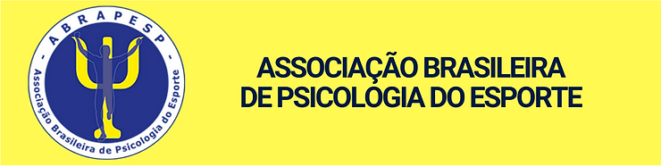

1. Publicações – Nas redes sociais
- Recomendações aos psicólogos do esporte, treinadores e equipe técnica: Entendendo que as informações sobre a Covid-19 estão constantemente em atualização, por se tratar de um evento ainda pouco conhecido, a ABRAPESP elaborou algumas recomendações aos psicólogos do esporte nesse período. Acesse as recomendações aos psicólogos clicando aqui e aos treinadores e equipe técnica aqui.
- 7 dicas para a arbitragem durante o isolamento social: A partir do trabalho realizado pela psicóloga Marta Magalhães, responsável pelo pilar mental dos árbitros CBF desde 2007, publicamos algumas dicas para esse público para o período de distanciamento social. Acesse aqui.
- Educação olímpica na prática: um relato de experiência: Convidamos a Dra. Natália Kohatsu Quintilio, profissional de Educação Física, para nos contar um pouco sobre o programa “Olimpismo: educação e integração cultural para o desenvolvimento humano por meio do esporte”, trabalho colaborativo entre professores da rede municipal de São Caetano do Sul e integrantes do Grupo de Educação Olímpica do GEO-USP. Clique aqui para conferir.
Obras completas
- Livro “Trabalho e Esporte: Precariedade, invisibilidade e desafios” (2020): Lançada recentemente e organizada pelas autoras Juliana A. de O. Camilo e Kátia Rubio, a obra conta com produções que trazem reflexões sobre duas áreas do conhecimento, o esporte e o trabalho. Esta é composta por grandes nomes da Psicologia do Esporte no país, parceiros e integrantes da nova gestão da ABRAPESP. O livro pode ser adquirido clicando aqui.
- Livro da Associação Brasileira de Psicologia Organizacional e do Trabalho (SBPOT): Recentemente a SBPOT publicou o volume 3 da coleção “O trabalho e as medidas de contenção da COVID-19: Contribuições da Psicologia Organizacional e do Trabalho no contexto da pandemia”. Este volume, intitulado “Retrato da Psicologia Brasileira no Cenário da COVID-19”, conta com a colaboração da Dra. Thabata Castelo Branco Telles (atual presidenta da ABRAPESP), no capítulo referente à contribuição da Psicologia no Esporte considerando o contexto de pandemia. Tenha acesso à publicação e leia o texto na íntegra clicando aqui.
- Caderno Jornada Vidas Ativas: Fruto da parceria entre o Centro de Práticas Esportivas da Universidade de São Paulo (CEPEUSP) e o Instituto Ayrton Senna (IAS), a produção contou com a colaboração, entre profissionais de diferentes áreas, de duas psicólogas que compõem a diretoria atual da ABRAPESP: Luciana Angelo (Secretaria) e Thabata Telles (Presidência). A versão eletrônica da revista pode ser obtida através de um cadastro, que pode ser realizado aqui.
2. Saiu na mídia
- “Sem minha torcida eu não consigo”, matéria produzida pelo “O Contra-Ataque”, que fala sobre a torcida e o desempenho das equipes de futebol, com a contribuição do associado Murilo Calafange. Acesse aqui.
- O Conselho Federal de Psicologia (CFP) realizou o debate on-line “A Psicologia e o Esporte: Flexibilização e retorno das competições em tempos de pandemia”, com a participação de Rodrigo Acioli (conselheiro do CFP e ex-presidente da ABRAPESP), Amir Somoggi e Leda Costa. A live está disponível nas redes sociais do CFP. Acesse o vídeo na íntegra aqui.
3. Eventos 2020
- Webinar GEO-ABRAPESP: A ABRAPESP participou do evento on-line organizado pelo Grupo de Estudos Olímpicos (GEO), coordenado pela Profa. Dra. Kátia Rubio (também fundadora da ABRAPESP), em homenagem ao dia Mundial do Desporto Olímpico e ao dia do Atleta Olímpico (23/06). Os vídeos do evento podem ser acessados no canal do YouTube “Olimpiar”. Acesse aqui.
- III Encontro Norte-Nordeste de Psicologia do Esporte (ENNEPE): O III ENNEPE, que tem como tema: “Aproximações e distanciamentos: Movimentos da psicologia do esporte no Norte-Nordeste brasileiro”, acontecerá nos dias 12, 13 e 14 de novembro de 2020, em formato on-line. O evento, que tem o apoio da ABRAPESP, está com inscrições e submissões de trabalhos abertas. Para obter mais informações, acesse o endereço: https://www.even3.com.br/ennepe2020/
- 。XVIII Congresso Brasileiro e XI Congresso Internacional de Psicologia do Esporte e do Exercício: O XVIII CONBIPE e XI ICSEP acontecerão dos dias 27 a 29 de novembro de 2020, de modo remoto. O evento é organizado pelo GEPEXDES, GEPAEE (UFPB), GPPE (UFPA) e GEPEEX (UNIVASF), com o apoio da ABEPEEx, e conta com grandes nomes da Psicologia do Esporte em sua programação, entre eles alguns parceiros e integrantes da atual gestão da ABRAPESP. Acesse mais informações sobre o evento aqui.
4. Nota de pesar
A ABRAPESP expressa o mais profundo pesar pelo falecimento do psicólogo Jhonas Rodrigues, devido à COVID-19, ocorrido no dia 23 de julho de 2020, quinta-feira. No último Congresso ABRAPESP, tivemos o prazer de conhecê-lo como pessoa e como profissional. Transmitimos nossa solidariedade à família e aos amigos diante da inestimável perda.
5. Parcerias ABRAPESP
Com o apoio da XX Turma do Curso de Aperfeiçoamento e Especialização em Psicologia do Esporte do Instituto Sedes Sapientiae, a associação tem elaborado conteúdos relacionados à pandemia da COVID-19. O objetivo é incentivar alunos do curso e associados a acessar as informações relativas ao contexto esportivo na atual conjuntura.
Além disso, a ABRAPESP vem dialogando, ao longo do ano, com instituições parceiras a fim de proporcionar benefícios aos nossos associados. Alguns desses benefícios foram descontos em cursos e eventos, como:
。Curso em Gestão de Projetos, do Instituto de Estudos Superiores de Fafe (IESF), Portugal, onde foi oferecido 25% de desconto aos associados;
。Curso “Psicologia do Futebol: teoria e prática”, da CBF Academy, onde foram oferecidos 20% de desconto para estudantes associados e 10% de desconto para profissionais associados;
。Workshop “Introdução à Psicologia do Esporte”, da Mundus Esportivus, onde os associados obtiveram 20% de desconto.
6. Espaço dos Associados
Descubra o que os nossos associados estão realizando e produzindo:
- “Estágio profissionalizante em Psicologia do Esporte em tempos de Pandemia”, relato de experiência da associada Telma Sara Q. Matos. Acesse aqui.
- Conheça os trabalhos do Grupo de Estudos e Pesquisas em Gênero Esporte e Mídia (GEPGEM) da Pontifícia Universidade Católica de Goiás, sob a responsabilidade e orientação da Professora Doutora Adriana Bernardes Pereira. Acesse aqui.
- Conheça os artigos científicos publicados pela Clínica Vidya, do associado Uberto Afonso Albuquerque Gama. Acesse aqui.
ASSOCIADO(A), tem interesse em divulgar o seu trabalho nesse espaço? Entre em contato conosco através do e-mail: comunicacao@abrapesp.org.br
Convidamos você a contribuir com a ABRAPESP. Para ajudar a impulsionar eventos e materiais em Psicologia do Esporte, compartilhe com a comunidade utilizando nossos canais, marcando @abrapesp_oficial e/ou utilizando #abrapesp.
#ABRAPESP
Acompanhe as nossas redes sociais: